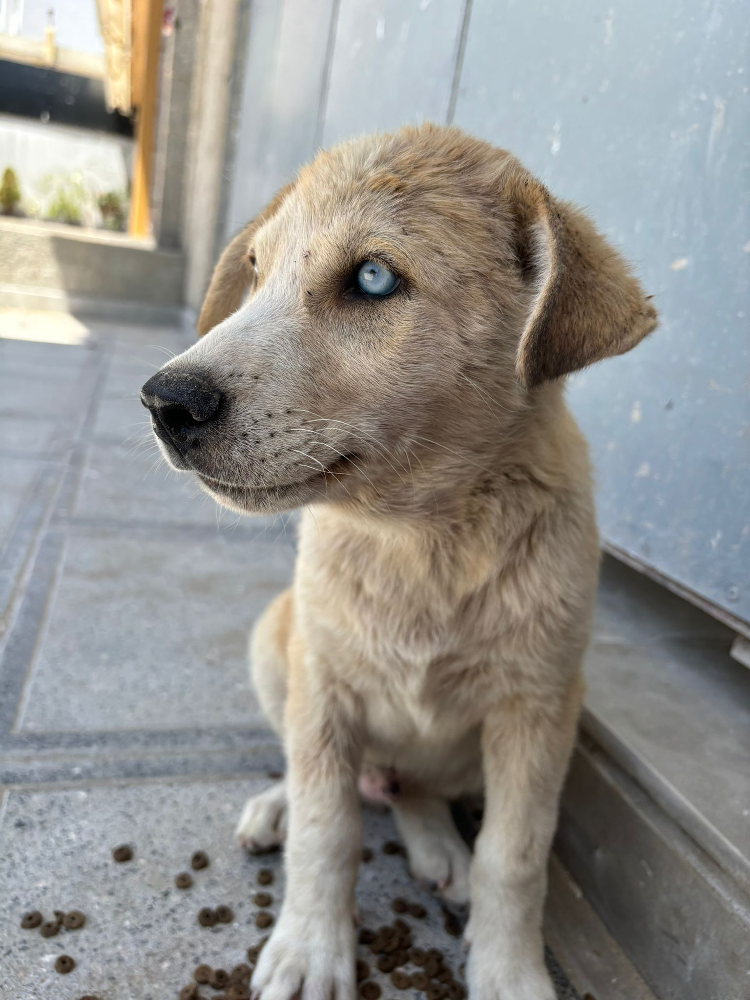

 Tanger, Marokko
Tanger, MarokkoJuni 2024 — Eerste reis
Het puppy met hemelblauwe ogen
Hij is het die ik nog steeds zie. Een klein puppy met ogen van een bijna onwerkelijk blauw, alleen zittend in het stof van Tanger. Zijn moeder was dood. Zijn broertjes en zusjes ook. Hij was de enige die het had overleefd. Hij keek me aan zonder te blaffen, zonder weg te rennen, alsof hij wist dat ik er voor hem was. Die blik heeft alles in gang gezet. Deze reis had een vakantie moeten zijn. Het werd een missie.
"Zijn ogen zo blauw als de hemel van Tanger. Alleen op de wereld, maar nog rechtop."


 Albanië
Albanië
 Kosovo
Kosovo
 Skopje, Noord-Macedonië
Skopje, Noord-Macedonië
 Sicilië, Italië
Sicilië, Italië
 Corsica, Frankrijk
Corsica, Frankrijk